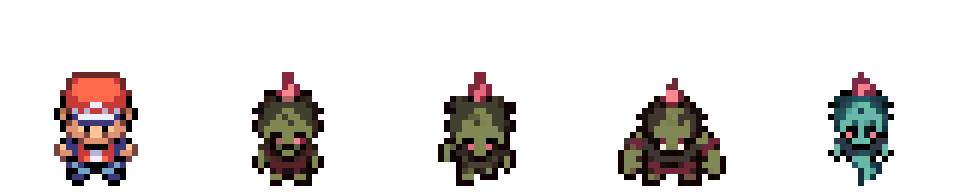
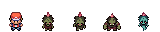
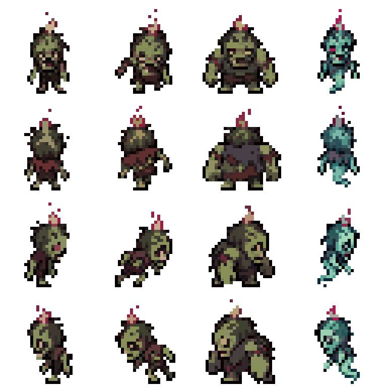
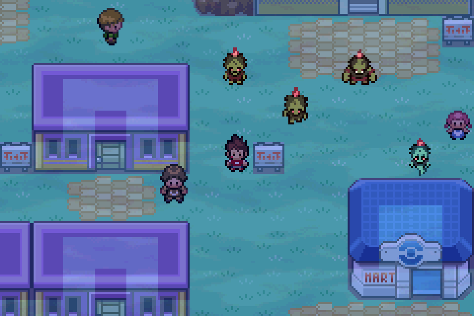
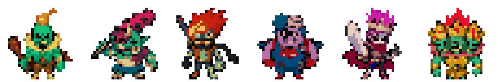
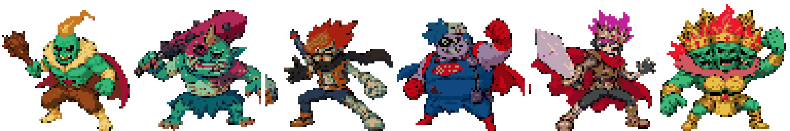
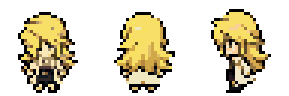
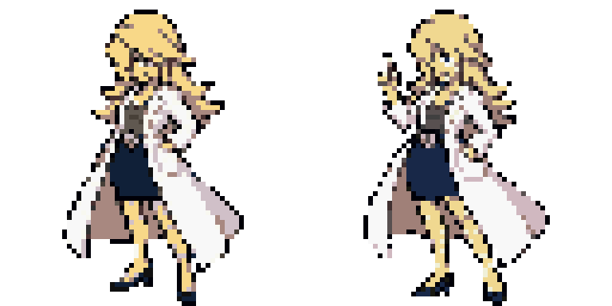
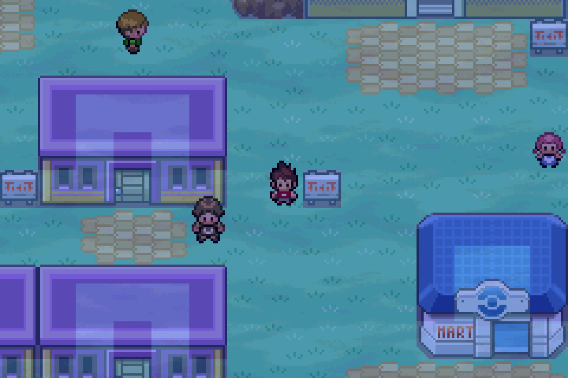

Aucune intégration au jeu. Les sprites ci-dessous sont des prototypes issus des planches générées, préparés pour évaluer leur silhouette et leur palette à petite échelle. Retouches au pixel et animations restent à réaliser après choix.
Nouvelle piste FRLG : Red puis errant, sprinteur, colosse, spectral — pieds alignés, échelle corrigée

FRLG : comparaison à résolution native

Étude précédente, trop haute : face / dos / droite / gauche à reprendre

Zombies : résolution native, transparence
Montage des quatre variantes sur carte : PAS une capture d’intégration

Six Dresseurs : prototypes overworld

Six Dresseurs : portraits 64 × 64 candidats

Alyzon : trois vues candidates

Alyzon : deux poses de portrait candidates

Capture réelle mGBA : nuit et météo natives, palettes temporaires en RAM

Capture réelle mGBA : brume animée, ROM inchangée
Montages des portraits dans une interface de combat : PAS des captures d’intégration